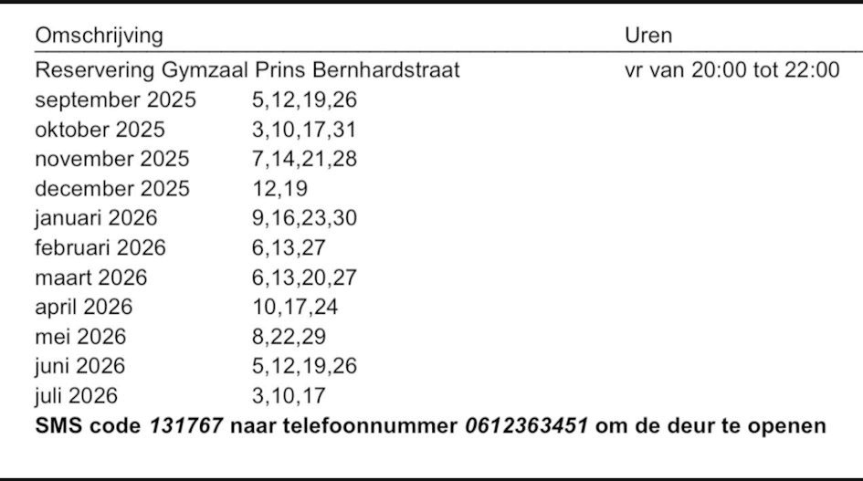

Contact
Adresgegevens trainingslocatie:
Sportzaal Prins Bernhardstraat 7 3331 BN te Zwijndrecht
Correspondentieadres
Onderdijk 90 3341 BM te H.I. Ambacht
armin.vogelaar@gmail.com
Telefoon
078-6813221
Rekeningnummer
ES5400 7301 0055 0752 5945 02
(Dit is inderdaad een Spaans rekeningnummer)
Kamer van Koophandel Nummer
1234
Github Pagina van de Website
https://github.com/1nf1n1t3f1r3/masque_de_fer
Trainingsdagen
De Schermdagen zijn op vrijdagavonden van 20:00-22:00, buiten de schoolvakanties, wanneer wij de zaal niet mogen huren.

Voor het geval wij vergeten het schema te updaten, de schoolvakanties kunt u vinden op Overzicht Shoolvakanties per Schooljar van de rijksoverheid. Gemeente Zwijndrecht valt onder 'Regio Midden'. Tijdens deze vakanties wordt er dus niet geschermd.
Lidmaatschap & Contributie
De kosten voor lidmaatschap zijn €57,50 per kwartaal
Hiermee mogen schermers ook uitrusting van de club gebruiken. Echter, als een schermer een wapen van de club breekt tijdens het gebruik (wat gelukkig zelden gebeurt), zullen we een contributie vragen, van rond de €50 Euro, zodat we ons arsenaal op pijl kunnen houden zonder een hoge contributie te vragen.